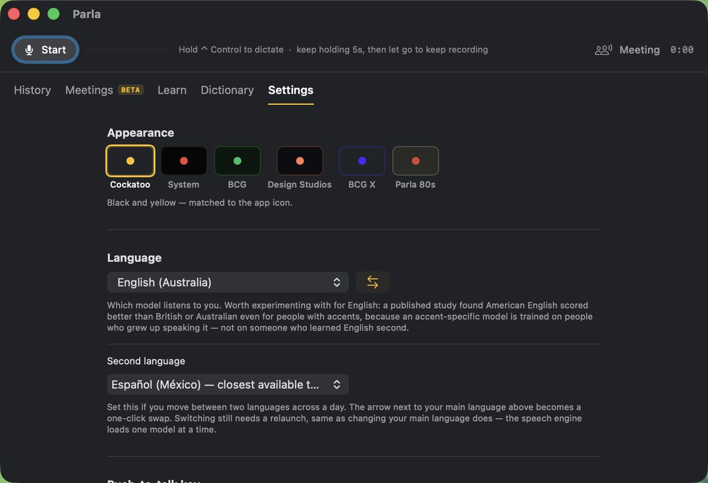

The work. Some of it rebuilt so it can be shown.
Client work is confidential. Where it matters I have rebuilt it with invented branding and invented data rather than blacking things out. The constraints are real, the craft is real, the logos are not.
Everything else here is either my own, or was my employer's to show. Four groups, in the order they matter.
The proposal, built as an experience.
A pitch a client can open and use rather than sit through. Coded proof-of-concepts running inside the proposal, a web experience carrying the argument, film, and a podcast, built as one thing instead of five deliverables.
I work inside the case team, with BCG X data scientists and engineers and the client's own technical people, and I bring the studio and the consulting team with me. Proposals have been won this way across agri-food, energy, convenience retail, beverages and banking.
The win is never one person's. It is what happens when deep BCG strategy is combined with design and creative craft.
How this one is handled. This is the most exposed work on the site, so it gets rebuilt rather than de-logoed. A stray logo, a recognisable photograph or a distinctive interface pattern identifies a client long after the obvious markers are gone. Sectors are named. Clients are not, and never will be.
A practice, and the people who run it without me.
I founded the Creative AI practice and I lead it: 33 nodes across the regions and a global lab of 10 creative technologists. Functional leadership is mine, people leadership sits with the regional managers, and the playbook is written so a node runs with me out of the room.
I designed the Power Up Weeks and then ran them through the regional leads rather than by myself, so every region got hands-on in its own timezone instead of watching one central webinar.
I hold clinics on creativity, branding, Creative AI and the technology underneath it. I write and deliver the deep dives: coding, graph engineering, context and prompt engineering, agent loops, and building agents that do real work. I author skills for the firm and for my own team, and the library now runs at 49 of them with an automated reviewer on the door. Structure without adoption is half a story, and adoption is the rarer half.
33
Creative AI nodes across the regions, run by regional leads
10
Creative technologists in the global lab, POC to internal product
49
Skills in the library, each scored against a published bar before it ships
400+
Designers reached, in their own timezone rather than one central webinar
Things I built that other people now use.
Client-facing products and internal team tools come out of the same making muscle, so I stopped separating them. I write the first working version myself, which makes the direction arguable instead of theoretical, then hand it to people who take it further than I can.
A native macOS dictation app. An agentic image-library generator, an HTML editor, a website builder with live editing, an email builder, a multi-agent studio, a council that anonymises and merges rival models, and Monday, the agent that runs my day.
The films on this page are themselves the proof. They come out of a pipeline I built: headless-browser stills, generated voiceover, motion, a music bed and the final cut, from the terminal rather than an editing suite.

Before any of this was called AI.
I came up through graphic design and brand strategy, in branding and design studios. Then marketing, then digital marketing at a point when UX and UI were not yet a discipline. I became a digital designer and an experience designer as the field formed around me, wearing every hat from creative services through to interface work.
The through-line has not moved in eighteen years: connecting brand strategy and brand marketing to what the C-suite is actually trying to do. That is the same argument I make now about design and revenue. It is just twenty years older than the AI part.
At Endeavour Group I led Dan Murphy's, Australia's largest drinks retailer and the group's biggest account, alongside BWS, Jimmy Brings, Langtons and Cellarmasters. I helped grow the in-house team from 4 people to 30, and we relaunched the Dan Murphy's brand from inside it.
For much of that time I led creative for the digital business unit, producing personalised assets at scale. We built the automation ourselves, because nothing existed to buy: Photoshop scripting driven from spreadsheet data generated the asset variants, while Oracle and Facebook personalised price, offer and send timing, down to weather-triggered creative. Millions of tailored offers a day. Alongside the new site and the app, online went from under 1% of sales to 13–15%. I also designed the propositions around it. Direct to Boot was our answer to Covid, and its design system was then rolled out across the group, including BWS and Woolworths. Then Dan's Run on UberEats, and Dan's Delivers, our own delivery campaign, which I executive-produced from the film shoot through to production assets for every medium.
Nothing here is sanitised. These were my employer's brands rather than a client's, so this is the one group on the page that can be shown exactly as it was.
4 to 30
In-house team grown, with up to six senior creatives reporting to me
2x
Roughly double the audience after the site restyle I led
18
Years across brand, product, service and creative leadership
5
Retail brands run out of one design system and one team